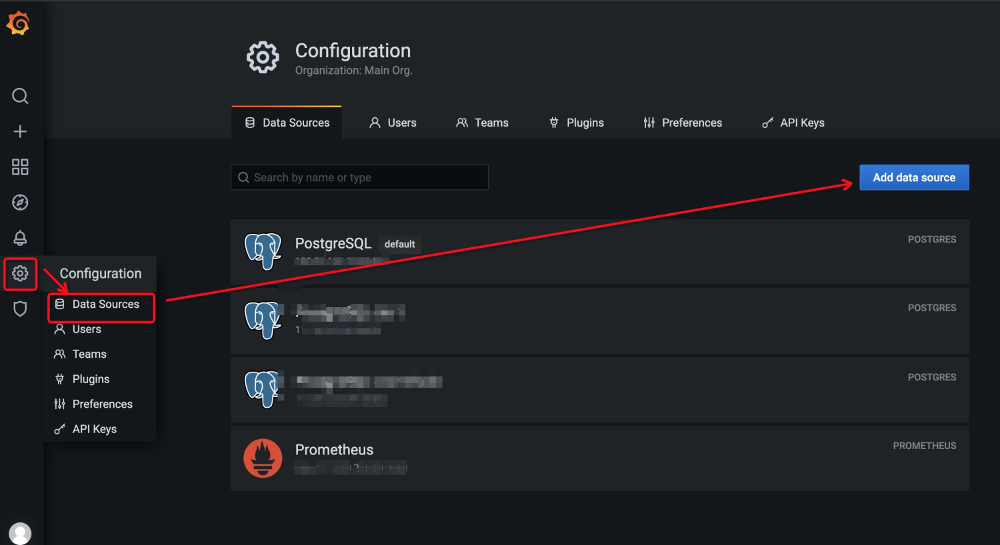

安装部署
本文档介绍了如何安装和运行PolarDB-NodeAgent，并查看采集到的监控数据。
对于PolarDB for PostgreSQL，PolarDB-NodeAgent默认在9974端口提供exporter服务，供Prometheus收集数据, 具体配置可见采集配置。
此外, 还提供grafana dashboard配置方便展示.
安装
安装
目前提供两种安装部署的方式：源码编译安装及RPM包安装。两种方式均需安装相关依赖。
安装依赖
安装golang
源码编译 & 安装
源码下载
git clone git@github.com:ApsaraDB/PolarDB-NodeAgent.git编译
go mod tidy go mod vendor make clean && make all或
sh build.sh安装, 默认安装路径为
/opt/db-monitormake install
RPM包构建 & 安装
源码下载
git clone git@github.com:ApsaraDB/PolarDB-NodeAgent.git在源码目录下进入到
rpm子目录，构建RPM包, 完成后RPM包在$HOME/rpmbuild/RPMS/路径下。rpmbuild -bb polardb-monitor.spec执行
yum install或者rpm -ivh对RPM包进行安装。
运行
进入/opt/db-monitor/目录，执行如下命令进行启动、停止和重启操作：
# 启动
sh bin/service.sh start
# 停止
sh bin/service.sh stop
# 重启
sh bin/service.sh restart
查看监控数据
Prometheus配置
在prometheus配置文件的scrape_conigs中，添加以下配置：
- job_name: 'polardb_o'
# metrics_path defaults to '/metrics'
# scheme defaults to 'http'.
static_configs:
- targets: ['0.0.0.0:9974']
honor_labels: true
scrape_interval: 20s
scrape_timeout: 20s
具体监控指标可见指标说明文档。
注意：导入到prometheus中的指标全部添加了
polar_前缀。
Grafana
除数据库视图之外，目前还提供更直观的grafana展示，可以通过导入grafana dashboard配置的形式进行查看。 推荐使用最新版本的grafana 8.2.1，安装部署可见官方文档。
添加数据源
Prometheus数据源配置请根据实际情况填写。

导入Dashboard
PolarDB提供配置好的报表样例，在代码库grafana目录下。